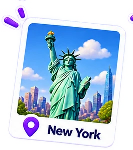
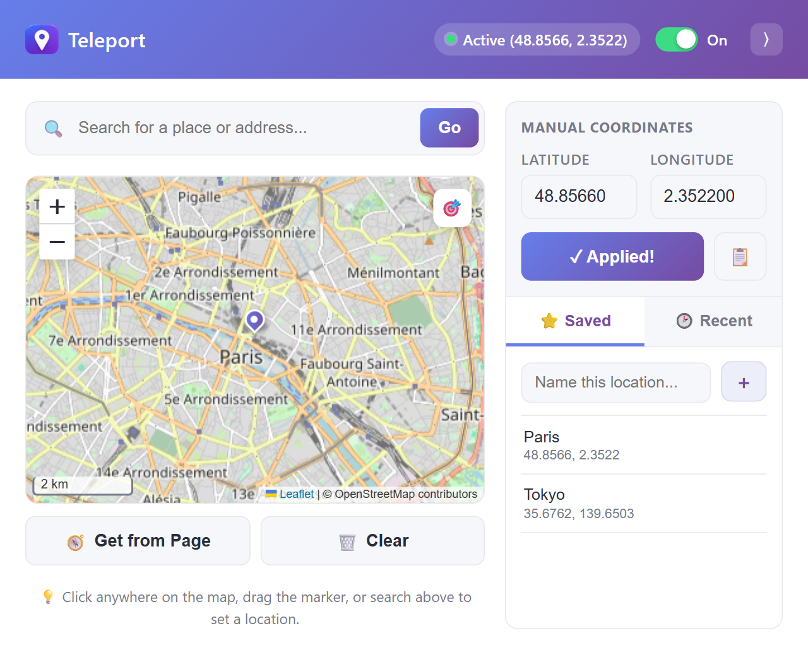

Be anywhere
your browser says
you are
Teleport Prank lets you fake your location on websites for fun. Pick a spot on the map and websites will see the location you chose. No account and no API key.
- Works in Edge and Chrome
- Your data stays in your browser
- Version 1.0.0


How it works
Three simple steps to prank your location.
-
1
Pick a location
Click on the map or search for any place in the world.
-
2
Turn it on
Enable Teleport Prank and apply your fake location.
-
3
Browse as if you're there
Websites will see the location you chose.
Try the real app
This is the actual extension popup running live. Click the map, search for a place, save favorites, or flip the switch. Nothing here changes your real browser location. Install the extension to do that.
Your alibi is one click away
Simple on the surface, with the extras when you want them.
Interactive map
Click anywhere, or drag the marker to fine-tune your spot.
Place search
Type a city, address or landmark and jump straight to it.
Exact coordinates
Enter latitude and longitude. Invalid values are caught for you.
Saved places
Name your favorites, rename them, and filter the list when it grows.
Recent places
Your last 8 locations are one click away. Star one to keep it.
On/Off switch
Turn the override off without losing your location.
What people use it for
Harmless pranks
Show friends you are on a beach in Tokyo while you are at your desk.
Testing location features
Check how your site or app behaves in different cities without traveling.
Privacy
Share an approximate or different location instead of your real one.
Install in 2 minutes
The extension is not in a browser store yet, so you add it manually. You only do this once.
-
Download and unzip.
Get the zip file and extract it to a folder you will keep, such as
Documents\Teleport. Do not delete the folder afterwards. -
Open your browser's extensions page.
edge://extensions/Paste it into the address bar. Browsers do not allow websites to open this page directly. - Turn on Developer mode. Use the switch on the extensions page.
- Click "Load unpacked". Select the folder you extracted in step 1.
- Pin it and go. Click the puzzle-piece icon in the toolbar, pin Teleport Prank, then click it to pick a location. Refresh any open tabs.
Questions
Is my location data sent anywhere?
No. Your chosen location and saved places are stored only in your browser. The only network requests go to OpenStreetMap for map tiles and place search.
Why does it ask for access to all websites?
To replace the browser's location on any page you visit. It does not read or collect page content.
A site still shows my real location. Why?
Some sites guess your location from your IP address, which no extension can change. Make sure the switch is On, then refresh the page. Browser pages such as edge:// and chrome:// cannot be modified.
Does it work in Chrome?
Yes. It works in Edge, Chrome and other Chromium browsers.
The extension disappeared after I deleted the folder.
Manually installed extensions run from the folder you selected. Keep that folder in a permanent place, then load it again if you moved or removed it.
Can I copy or redistribute it?
Personal use is allowed. Copying, modifying and redistributing are not. The license is included in the project.
Questions, bugs or ideas?
Something not working, or got a suggestion? Send me an email and include a few details so I can help faster.
Email support
marklibres345 [at] gmail.com
The button opens your email app with a message ready to fill in.
Details that help
- Your browser and version, for example Edge or Chrome
- The Teleport version (1.0.0)
- The website where it did not work
- What you expected and what happened instead